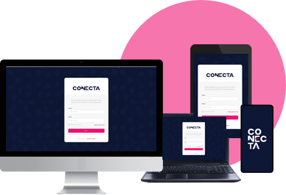

Sua Plataforma de Transformação Digital.
Vivemos em um cenário extraordinariamente novo, no qual as relações das organizações com seus clientes, parceiros e fornecedores têm base em fluxos de conversas horizontais e não hierárquicas, numa dinâmica propícia para a construção de diálogos, compartilhamentos de visões e trocas de opiniões.
Isto requer às empresas, instituições públicas e organizações em geral uma mudança de atitude e mentalidade. Muitas das formas ’tradicionais’ de trabalho não se aplicam mais para os atuais modelos de negócio. É essencial adotar abordagens mais modernas, que implementem novas formas de interagir e se relacionar com o mundo externo. E a tecnologia tem, obviamente, um papel essencial para se atingir este objetivo.
Uma nova classe de soluções surge para viabilizar a implementação de novos conceitos, mais adequados para criar e sustentar integrações virtuais entre organizações e público. Elas permitem que empresas desenvolvam seu próprio ambiente de mídia social, com base em modelos fortemente inspirados nas plataformas e tecnologias digitais. Estas soluções aproximam substancialmente a organização do seu público-alvo, impactando a prestação de serviços – pelo maior conhecimento do mercado e maior empatia com suas necessidades – acarretando mudanças vitais em seu formato de atuação, métodos de interação e modelos de relacionamento.
Dê sentido à sua
relação com o
mercado
Dê sentido à sua relação com o mercado
A Plataforma CONECTA
A Plataforma Conecta é uma solução digital que provê um modelo inovador de rede social, pautado na criação de uma cultura de colaboração instigante e criativa entre organização e público, com base em interesses comuns. A solução representa um catalisador do desenvolvimento de diálogos e ideias, fortalecendo a conexão entre empresas e mercado, organizações públicas e sociedade.
A plataforma foi especificamente concebida para tirar proveito das experiências adquiridas pelo público em geral no mundo das plataformas sociais e mídias digitais, ao mesmo tempo em que transcende esta abordagem e implementa um novo modelo – moderno, arrojado, objetivo e produtivo – nas relações entre instituições e pessoas.
Representa a transformação digital na sua essência, a partir do momento que proporciona a aproximação definitiva de toda a organização com seu ambiente externo, construindo poderosos laços entre empresa ou órgão público com o público-alvo, proporcionando a almejada ampliação da esfera de influência da instituição.
A Plataforma Conecta
amplia as relações de
organizações públicas e
privadas com o seu público.
A Plataforma Conecta amplia as relações de organizações públicas e privadas com o seu público.
Benefícios da Plataforma CONECTA
Benefícios da Plataforma CONECTA
Criação de
uma Cultura
de Colaboração
- Ambiente de incentivo à troca de conhecimentos e ideias, com foco no diálogo e colaboração.
- Empresas mais próximas do mercado. Instituições públicas mais próximas da sociedade.
- Oportunidade para aprofundar o conhecimento do público-alvo: necessidades, aspirações e comportamentos.
Foco em
Conteúdo
- Curadoria de conteúdo como elemento de dinamização e estreitamento do relacionamento.
- Ambiente voltado ao desenvolvimento de assuntos de interesse comum.
Versatilidade e
Flexibilidade do
Modelo
- Interações e compartilhamento de informações omnichannel.
- Diversidade de mídias para disseminação de informações: textos, arquivos, links, podcasts, vídeos e imagens, entre outros.
- Gestão do uso da plataforma.
Modernize sua abordagem digital e alavanque sua presença no mercado.
Modernize sua abordagem digital e alavanque sua presença no mercado.

Plataforma CONECTA . A Transformação Digital ao Seu Alcance.
CONECTA cria um ambiente virtual de convívio e cooperação, em uma abordagem inovadora para o desenvolvimento de uma nova plataforma social, mais adequada aos objetivos de organizações públicas e privadas.

COMO
PODEMOS
AJUDAR
A TD Front Office está pronta para apoiar sua empresa em todo o processo de implantação da Plataforma Conecta e de Transformação Digital, utilizando as melhores metodologias e recursos profissionais em Tecnologia da Informação, consultoria e desenvolvimento organizacional, qualquer que seja o porte e o segmento de atuação da sua empresa.
A TD Front Office está pronta para apoiar sua empresa em todo o processo de implantação da Plataforma Conecta e de Transformação Digital, utilizando as melhores metodologias e recursos profissionais em Tecnologia da Informação, consultoria e desenvolvimento organizacional, qualquer que seja o porte e o segmento de atuação da sua empresa.